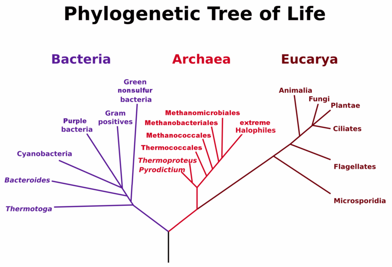
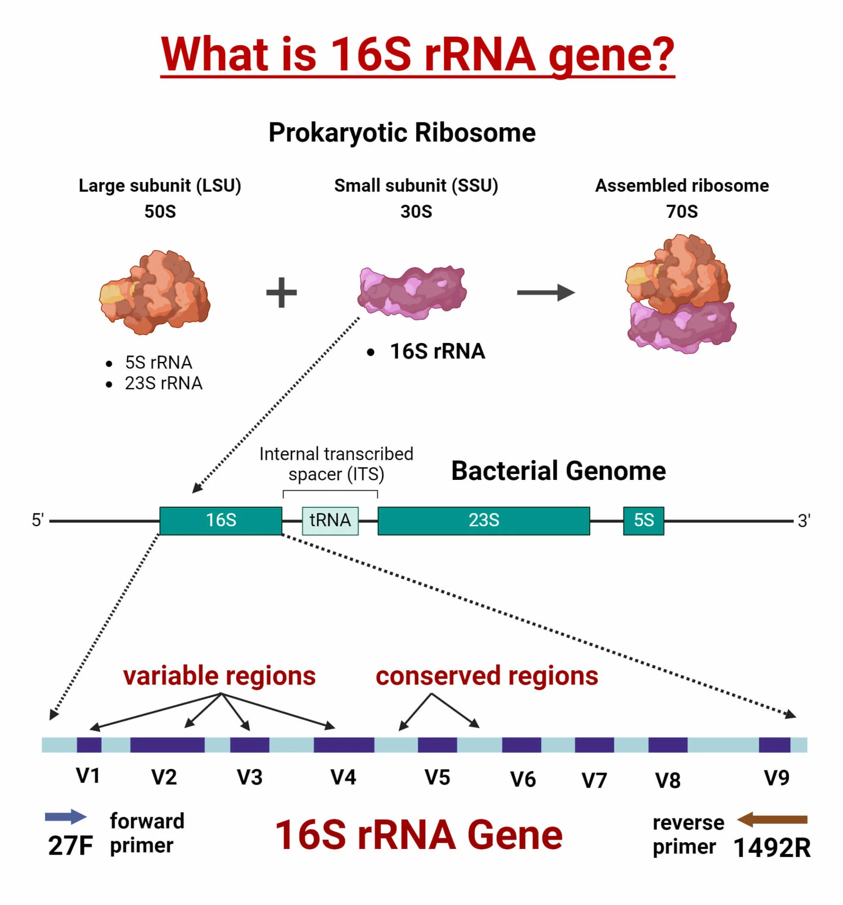
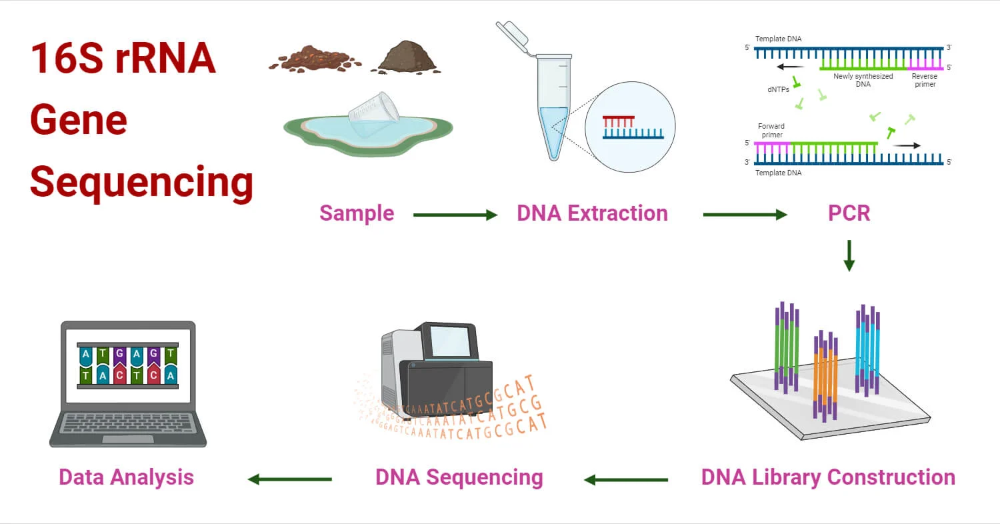
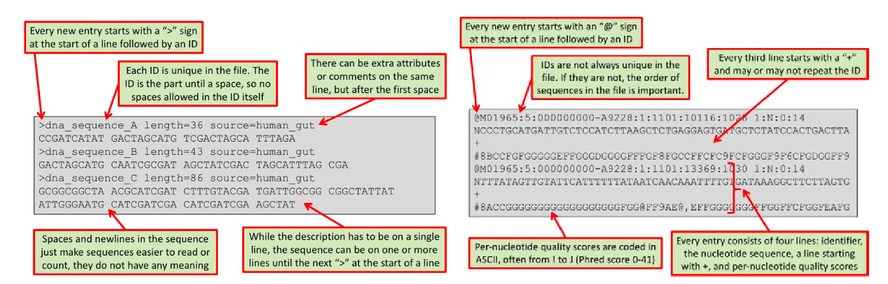
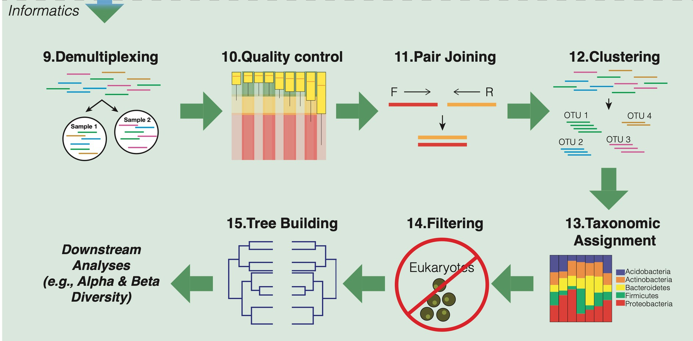

Marcadores Moleculares: Estudio de caso de Microbiota#
Carl Woese propuso en 1977 un sistema de clasificación en dominios, basado en la secuencia del ARN ribosomal

https://commons.wikimedia.org/w/index.php?curid=24740337Secuencias Ribosomales#
El ribosoma es un buen marcador filogenético porque el ARN ribosomal (rRNA) está presente en todos los organismos vivos, cumple una función esencial y, por lo tanto, es altamente conservado a lo largo de la evolución. Esta conservación asegura que las secuencias puedan alinearse y compararse entre organismos muy distintos. Al mismo tiempo, el rRNA contiene regiones variables que acumulan cambios evolutivos y permiten diferenciar entre taxones a distintos niveles (desde reinos hasta especies).

Secuenciación del 16S de ambientes: comunidades microbiológicas#
Los métodos tradicionales basados en cultivo requieren procesos de aislamiento laboriosos y solo permiten detectar una pequeña fracción de las especies microbianas. El desarrollo del 16S rRNA como marcador para la identificación de organismos ha permitido el estudio eficiente y rápido de numerosas muestras. Gracias a la secuenciación del 16S rRNA se han identificado muchas secuencias de especies previamente no cultivadas.

Análisis de datos#
##### CARGAR MÓDULO CONDA#####
##### CREAR AMBIENTE CONDA #####
conda create -n microbiota -c bioconda vsearch fastqc seqtk
source activate microbiota
1. Archivos crudos#

wget https://ftp.sra.ebi.ac.uk/vol1/fastq/SRR123/006/SRR12324206/SRR12324206_1.fastq.gz
wget https://ftp.sra.ebi.ac.uk/vol1/fastq/SRR123/006/SRR12324206/SRR12324206_2.fastq.gz
De aquí en adelante los comandos deben estar en un slurm
2. Reporte de calidad#
El reporte de calidad es un archivo .html que se lee mejor desde un browser. Para poder visualizarlo, cópialo a tu computador y lo abres desde allí. Consulte el manual de FASTQC para entender los parámetros de calidad: https://www.bioinformatics.babraham.ac.uk/projects/fastqc/
# Correr dentro de un slurm
# Evaluación individual
fastqc SRR12324206_1.fastq.gz SRR12324206_2.fastq.gz
# Reporte consolidado
multiqc .
📝 Preguntas de interpretación del reporte de FastQC
¿Qué significa el módulo “Per base sequence quality” y qué debemos observar?- ¿La longitud del fragmento es similar?
En el módulo “Per sequence GC content”, ¿qué indica una desviación importante respecto a la curva normal?
¿Por qué es importante revisar el módulo “Adapter content”?
¿Qué información entrega el módulo “Per sequence quality scores” y cómo se interpreta?
¿Qué significa encontrar un resultado “FAIL” en “Sequence Duplication Levels”?
¿Cómo interpretamos el módulo “Overrepresented sequences” en un dataset de microbiota?
3. Ensamblaje de pares (merge reads)#

Cuando hacemos secuenciación paired-end, cada fragmento de ADN se lee desde los dos extremos → obtenemos dos lecturas (read 1 y read 2) que se solapan en el medio. El ensamblaje de pares consiste en:
Identificar el solapamiento entre read1 y read2.
Unir las lecturas en una sola secuencia continua (contig).
Corregir errores: si las bases en el solapamiento difieren, el algoritmo decide cuál es más confiable (basado en calidad).
vsearch --fastq_mergepairs SRR12324206_1.fastq.gz \
--reverse SRR12324206_2.fastq.gz \
--fastqout merged.fastq
#--fastq_mergepairs: indica que debe ensamblar lecturas forward y reverse
#--fastqout: genera el archivo con las secuencias ensambladas
En el proceso de merging, la herramienta (ej. vsearch) toma como base el read forward (/1).
Luego busca su pareja (/2 = reverse).
Si logran solaparse bien, produce una secuencia ensamblada única.
El resultado se guarda con el encabezado del read forward, para mantener consistencia y evitar duplicados.
4. Filtrado de calidad#
Cuando secuenciamos ADN, cada base (A, T, C, G) viene acompañada de un score de calidad (Phred score). Este número indica la probabilidad de que la base esté mal llamada por la máquina. Por ejemplo:
Q30 = probabilidad de error 1 en 1000 (99.9% de certeza).
Q20 = probabilidad de error 1 en 100 (99% de certeza).
vsearch --fastq_filter merged.fastq \
--fastq_maxee 1.0 \
--fastq_minlen 200 \
--fastaout filtered.fasta
Preguntas de interpretación del Filtro de calidad
¿Cuántas lecturas se retuvieron después del filtrado de calidad? Compara el número de lecturas en merged.fastq (antes del filtrado) con el de filtered.fasta (después del filtrado)
5. Clustering / ASVs (OTUs simplificado)#
Una vez que tenemos lecturas limpias y de buena calidad, necesitamos agruparlas en unidades biológicas comparables. El clustering consiste en agrupar secuencias muy similares entre sí en una sola categoría. Estas categorías se conocen como:
OTUs (Operational Taxonomic Units): grupos de secuencias con un porcentaje mínimo de identidad (ej. 97%).
ASVs (Amplicon Sequence Variants): métodos más modernos (ej. DADA2, Deblur) que buscan resolver variantes individuales sin necesidad de un umbral fijo.
# Quitar duplicados exactos
vsearch --derep_fulllength filtered.fasta \
--output derep.fasta \
--sizeout
# Clustering a 97% identidad
vsearch --cluster_size derep.fasta \
--id 0.97 \
--centroids otus.fasta \
--relabel OTU_
6. Asignación taxonómica (ej. con base SILVA pequeña)#
La base de datos SILVA es uno de los recursos más usados en estudios de microbiota y filogenia de procariotas.
# Primero descargar la base de datos
wget https://www.arb-silva.de/fileadmin/silva_databases/current/Exports/SILVA_138.2_SSURef_NR99_tax_silva.fasta.gz
# Descomprimir
gunzip SILVA_138.2_SSURef_NR99_tax_silva.fasta.gz
# Renombrar para simplificar
mv SILVA_138.2_SSURef_NR99_tax_silva.fasta silva_16S.fasta
#Utilizar el modulo de blast+ para formatear la base de datos
makeblastdb -in silva_16S.fasta -dbtype nucl -out silva_16S
Luego de tener la base de datos en el formato correcto, vamos a buscar la mejor coincidencia de cada OTU en la base de datos Silva, usando ≥90% de identidad como criterio mínimo, y guarda la asignación en un archivo tabular estilo BLAST.
# Asignar OTUs
vsearch --usearch_global otus.fasta \
--db silva_16S.fasta \
--id 0.9 \
--blast6out otu_taxonomy.txt
7. Conteo tabla OTU#
vsearch --usearch_global filtered.fasta \
--db otus.fasta \
--id 0.97 \
--otutabout otu_table.txt
8. Análisis básico de diversidad#
Primero vamos a mapear los OTU con la taxonomía, cual extraemos de los header de archivos .fasta
from Bio import SeqIO
import pandas as pd
# --- extraer subject -> taxonomía desde el FASTA ---
records = SeqIO.parse("silva_16S.fasta", "fasta")
mapping = {}
for r in records:
header = r.description.split(" ", 1) # divide en Accession y Taxonomía
subject = header[0]
taxonomy = header[1] if len(header) > 1 else "NA"
mapping[subject] = taxonomy
# --- cargar resultados de blast ---
cols = [
"query", "subject", "pident", "length", "mismatch", "gapopen",
"qstart", "qend", "sstart", "send", "evalue", "bitscore"
]
df = pd.read_csv("otu_taxonomy.txt", sep="\t", names=cols)
# --- quedarnos con el mejor hit por OTU ---
df = df.sort_values(by=["query", "bitscore"], ascending=[True, False])
df = df.drop_duplicates(subset="query", keep="first")
# --- añadir taxonomía usando el diccionario ---
df["taxonomy"] = df["subject"].map(mapping).fillna("NA")
# --- seleccionar columnas principales ---
otu_taxonomy = df[["query", "pident", "evalue", "taxonomy"]]
print(otu_taxonomy.head())
otu_taxonomy.to_csv("otu_taxonomy_with_names.csv", index=False)